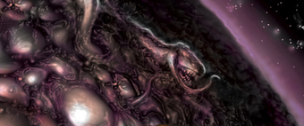

Уббо-Сатла есть источник всего живого, а потому никому неведомо, когда и откуда он возник. Однако «Книга Эйбона» повествует, что в незапамятные времена, еще до того, как Тсатоггуа, Ктулху и Йог-Сотот спустились на первозданную Землю, бесформенный океан протоплазмы Уббо-Сатла уже пенился и бурдил, окутанный испарениями, беспрестанно выпуская извивающиеся ложноножки и извергая из себя простейшие формы жизни.
Бездумно ползали эти порождения по сакральным скрижалям Древних богов, высеченным из звездных камней и хранимым У6бо-Сатлой. Они напитывались их мудростью и развивались — плавали в океанах, ползали по суще летали в небесах, поднимались, чтобы ходить на двух ногах, и создавали великие цивилизации. Но когда-нибудь они оглянутся назад, позабыв древнюю мудрость, вновь станут первобытными и опустятся на четвереньки, чтобы затем превратиться в простейшие формы и вернуться к истоку Уббо-Сатлы, ибо он есть начало и конец всего.
Впервые появляется в одноименном рассказе Кларка Эштона Смита (Ubbo-Sathla, 1932).
